この動画で伝える一文
「小さな道具をいくら作っても、大きな仕事は変わらない」と思っている人に、小さく作っても一つひとつがちゃんと機能していれば、つないだとき大きく仕事を変えられる、と伝え、「作っていたミニアプリたちは、つないだ瞬間に化けた」という本人の実感を残す。
ユーザー本人の言葉（2026-11-05、原文）
「ここの本質は、小さく作って、一個一個がちゃんと機能すれば、つないだ時に大きく何かを変える、そういう便利なものになるっていう、そういうところをしっかりと伝えていきたい。」
構成への反映：この言葉を「小さく作る」→「一つひとつがちゃんと機能する」→「つないだときに大きく変わる」の 3 段に分け、そのまま本編の骨組みにした（段1＝02–03、段2＝04–05、段3＝07–09）。尺は段3を最も厚くし（35 秒）、段1 20 秒・段2 23 秒。動画ネタ案の「合体させるな（塊に潰れて割れる）」は 06 の 1 カット（12 秒）だけの脇役にし、段2の弱点（量が増えると手渡しが重い）から段3へ移る理由づけに使う。
絵への反映：主役の形は「凹凸のついた青いコマ（ミニアプリ）」1 種類だけ。段1では 1 つずつ置かれ（02）、止めたものは灰に沈む（03）。段2では 1 つのコマが緑の枠で「ちゃんと動く」印を受け、オレンジの粒を入れて出す（04）。段3では出口と入口が噛み合って粒が流れ（07）、引くと 1 本の線になる（09）。最後の 11 で 3 段を「小さく作る。／ちゃんと動く。／つなぐと、化ける。」の階段状の 3 行に要約し、コマを順に見るだけで 3 段が追えるようにした。
留保と閉じ方：「一発で作っても同じ形にはならない」「本当に化けたのは経験だったのかもしれない」（10）を声と文字の両方に残し、最後は本人の肯定「作っていたミニアプリたちは、つないだ瞬間に、化けました」（11）で閉じる。視聴者への問いかけや一般論には置き換えない。
冒頭（01「数珠つなぎで動かせたら」）と最後（11「つなぐと、化ける。」）の文言だけで「つなぐと変わる」が伝わることを確認済み（文面上）。
対象視聴者と持ち帰ってほしいこと
対象：社内向けの小さなツールや自動化を作っている／作ろうとしているエンジニア、業務改善の担当者。「小さいものをいくつ作っても大した変化にならない」「やるなら最初から大きなシステムを」と感じている人。
持ち帰ってほしいこと：①まず小さく、1 つに 1 つの仕事で作ってよい ②ただし一つひとつがちゃんと動く（現場で使われ、入力と出力が分かれている）状態にしておく ③そうしておけば、後からつないだときに大きく変わる。合体させず、流れだけをつなぐ。
声・文字・素材の役割分担
| 担い手 | 役割 | 載せないもの |
|---|---|---|
| 声（ナレーション） | 経緯と理由を話す：現場の一言、作っては止めてきたこと、量が増えて負荷になったこと、合体させずにつないだこと、留保。文として聞かせる部分。 | コマの数や色の説明（絵で見える） |
| 文字（キネティックタイポグラフィ） | 3 段の要の語だけを強く印象づける：「小さく作る」「ちゃんと動く」「つなぐ。」「点が、線になった。」「つなぐと、化ける。」。声の全文字幕にはしない（画面の文字は約286字で声の半分以下）。 | 経緯の説明文、オーケストレーターの仕組みの説明 |
| 素材（図形・ピクト・実写・AI映像） | 「小さい／ちゃんと動く／つながる」を感じさせる：青いコマの置き方、緑の枠、オレンジの粒の流れ、引きの線。実写は「現場」「手渡し」の手触り（候補のみ）。 | 実在の画面・顧客名・人物の顔・他社ロゴ |
ナレーションは案。音声生成の許可ではない（AGENTS.md「APIによるナレーション生成」）。ナレーションを使わない場合は、画面の文字を増やす必要があり尺も変わる（判断点）。
全体構成と尺配分
| カット | 段 | 時間 | 尺 | 声の字数 | 役割 | 見出し |
|---|---|---|---|---|---|---|
| 01 | 導入・留保・結論 | 0:00–0:09 | 9秒 | 37 | 導入（現場の一言） | 「数珠つなぎで動かせたら」 |
| 02 | 段1 小さく作る | 0:09–0:19 | 10秒 | 44 | 段1：小さく作る（1アプリ1仕事） | 小さく作る |
| 03 | 段1 小さく作る | 0:19–0:29 | 10秒 | 44 | 段1：小さく作る（育てて、止める） | 使われないものは、止める。 |
| 04 | 段2 一つひとつがちゃんと機能する | 0:29–0:40 | 11秒 | 50 | 段2：一つひとつがちゃんと機能する | 一つひとつが、ちゃんと動く |
| 05 | 段2 一つひとつがちゃんと機能する | 0:40–0:52 | 12秒 | 54 | 段2の弱点（量が増えると、分かれていること自体が負荷） | どれに、何を入れた？ |
| 06 | 脇役の対比（段2→段3の間） | 0:52–1:04 | 12秒 | 55 | 脇役の対比：合体させる案（塊に潰れて割れる） | がっちゃんこ？ |
| 07 | 段3 つなぐと大きく変わる | 1:04–1:15 | 11秒 | 52 | 段3：つなぐ（オーケストレーター） | 流れだけを、つなぐ。 |
| 08 | 段3 つなぐと大きく変わる | 1:15–1:26 | 11秒 | 47 | 段3：個別利用と連続処理の両立 | 1つだけ使う日も、そのまま。 |
| 09 | 段3 つなぐと大きく変わる | 1:26–1:39 | 13秒 | 52 | 段3：大きく変わる（見せ場） | 点が、線になった。 |
| 10 | 導入・留保・結論 | 1:39–1:52 | 13秒 | 63 | 留保（一発では作れない／化けたのは経験） | 本当に化けたのは、経験かもしれない |
| 11 | 導入・留保・結論 | 1:52–2:06 | 14秒 | 65 | 本人の結論（肯定で閉じる） | 小さいまま、終わらない。 |
| 12 | エンドロゴ | 2:06–2:11 | 5秒 | 0 | 制作表示 | エンドロゴ |
尺の算出：ナレーション 563 字（句読点・かぎ括弧を除く）÷ 5.5 字/秒 ≒ 102 秒。各カットに息継ぎと見せ場の余白 1.5 秒（切り上げ）、09 の Zoom out と Freeze に +2 秒、エンドロゴ 5 秒。合計 約 2:11。秒数は目安で、等速での読了・観察時間は制作側の試作で確かめる。
段ごとの配分：導入 9 秒 → 段1 小さく作る 20 秒 → 段2 ちゃんと機能する 23 秒 → 脇役の対比 12 秒 → 段3 つなぐと変わる 35 秒 → 留保 13 秒 → 結論 14 秒 → ロゴ 5 秒。
判断点：尺 既定は約 2:11（ネタ案の約 2 分 10 秒とほぼ同じ）。2 分以内にする場合は、脇役の 06（12 秒）を外して約 1:59 にする案を推す（3 段の主役は削らない）。05 の最後から 07 の「合体ではなく、」へ直接つなぐ。3 分には伸ばさない。
カット表・絵コンテ
各カットに「はじめ」「おわり」の 2 コマと間の動きを書いています。コマ画は構図のラフ（1280×720、明るい紙色）で、完成画ではありません。秒数・位置は参考値で、実装の手順は制作側の裁量です（画面全体を大きく動かすこと、可読性、留保は緩めない）。three.js を推奨（コマ・粒・カメラは three.js の層、文字は DOM／CSS の層に分ける）。章表示・テロップ帯・エンドクレジットは入れない。
「数珠つなぎで動かせたら」
0:00–0:09 / 約9秒 ・ 導入・留保・結論 ・ 導入（現場の一言）

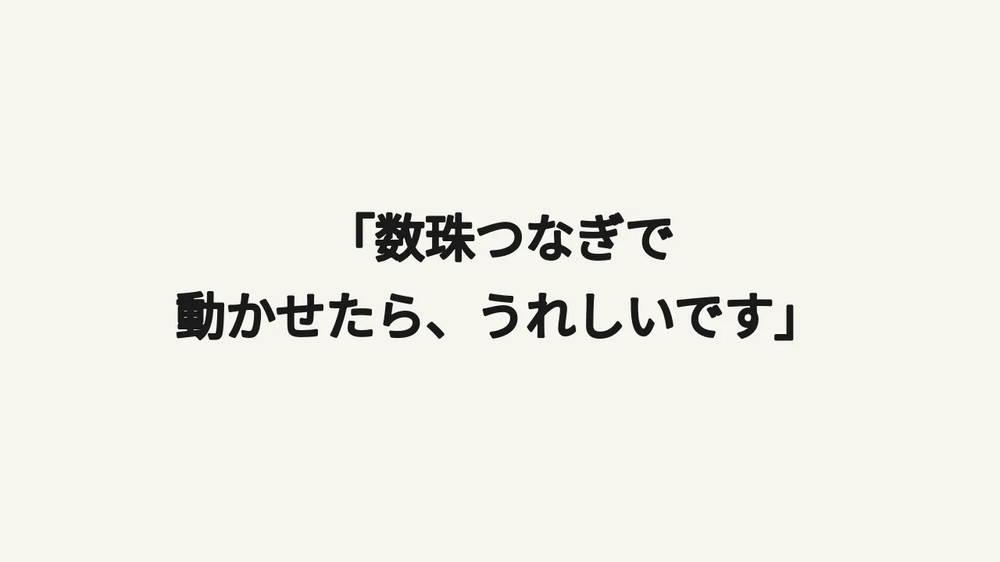

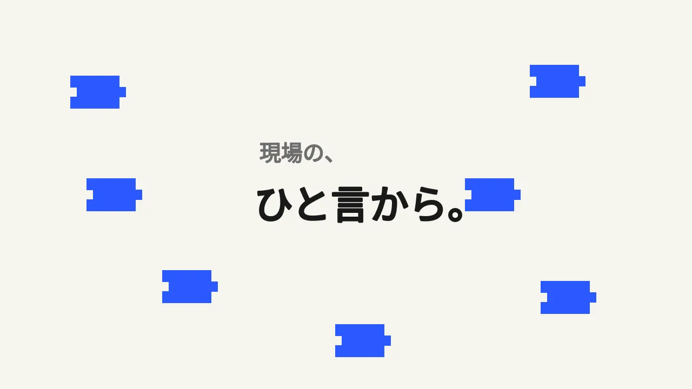
「数珠つなぎで
動かせたら、うれしいです」
現場の、ひと言から。
「数珠つなぎで動かせたら、うれしいです」。現場のメンバーの、この一言がきっかけでした。
声 37字 ／ 画面 30字
はじめ：中央・2行の大見出し（面の重心は中央）。おわり：文字は左中、コマが画面の四方に散る（重心が分散）。
- 0〜2秒：引用の2行が行マスクで下から入り、同時に画面全体を Dolly in（寄り）。
- 2〜5秒：読む間、行ごとに逆向きへ流す（1行目は左へ、2行目は右へ）。
- 5〜7秒：Dolly out（引き）。引きの途中で、散らばったコマが奥から手前へ現れる。コマの数で「たくさんある」を見せる。
Dolly in → Dolly out
- 実写素材：作業机の上に付箋とノートPCが並ぶ手元（人物の顔なし・ストック）。「現場」を感じさせる 2 秒
- ピクトグラムアニメ：吹き出しから引用が出る人型ピクト（顔なし）
小さく作る
0:09–0:19 / 約10秒 ・ 段1 小さく作る ・ 段1：小さく作る（1アプリ1仕事）

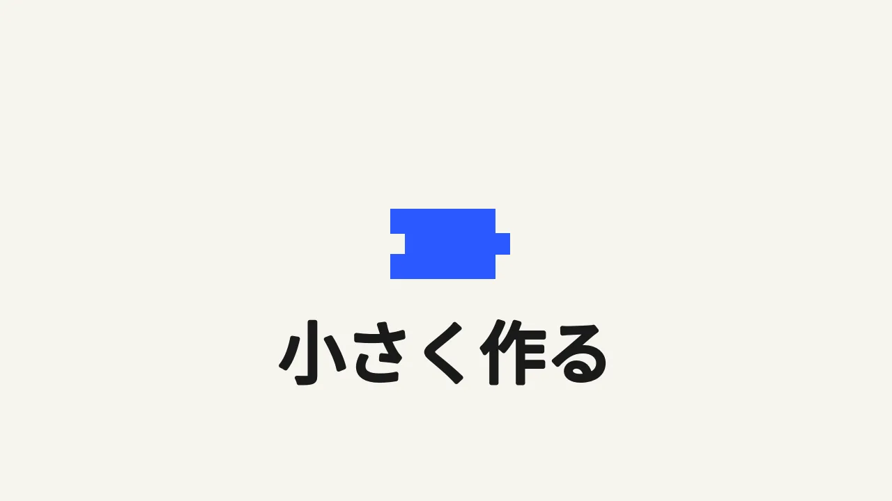

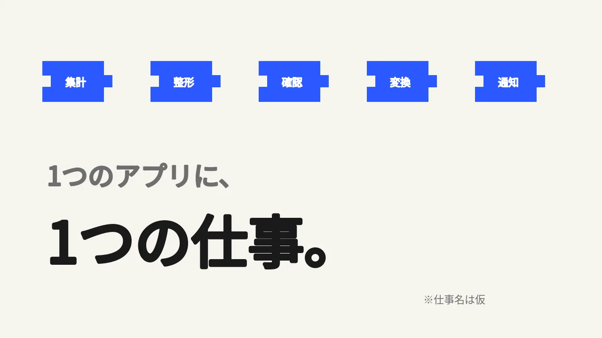
小さく作る
1つのアプリに、1つの仕事。
自社では、いくつものミニアプリを作ってきました。ひとつのアプリが受け持つのは、ひとつの仕事です。
声 44字 ／ 画面 19字
はじめ：中央に縦積み（コマ＋文字）。おわり：上段に横一列のコマ、下段に左寄せの2段見出し。重心が中央から下左へ。
- 0〜2秒：「小さく作る」が塊ごと画面外の下から叩き込まれ、少し回転して水平に収まる。
- 2〜6秒：コマが1つずつ左から右へポンと置かれる（間隔は一定）。カメラは右へ Truck。
- 6〜12秒：「1つの仕事。」を大きく、行マスクで入れる。読む間は文字の塊を左へゆっくり流し、コマの列は右へ流す（逆向き）。
固定 → Truck right
- 図解：1つの箱に1つの仕事名を入れたアイコン列（汎用の仕事名に置き換え）
- ピクトグラムアニメ：工具箱から小さな道具が1本ずつ並ぶ
使われないものは、止める。
0:19–0:29 / 約10秒 ・ 段1 小さく作る ・ 段1：小さく作る（育てて、止める）

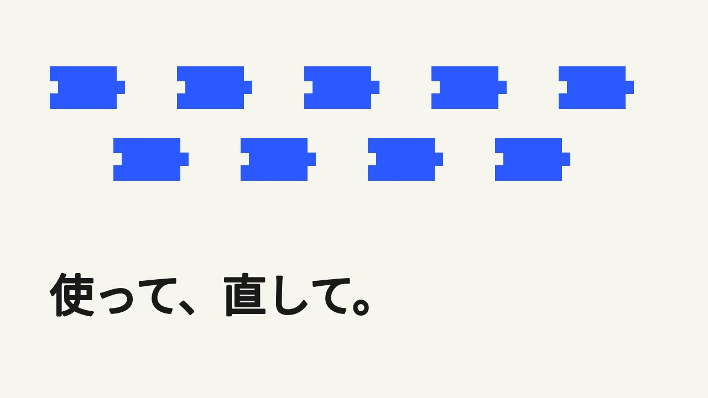

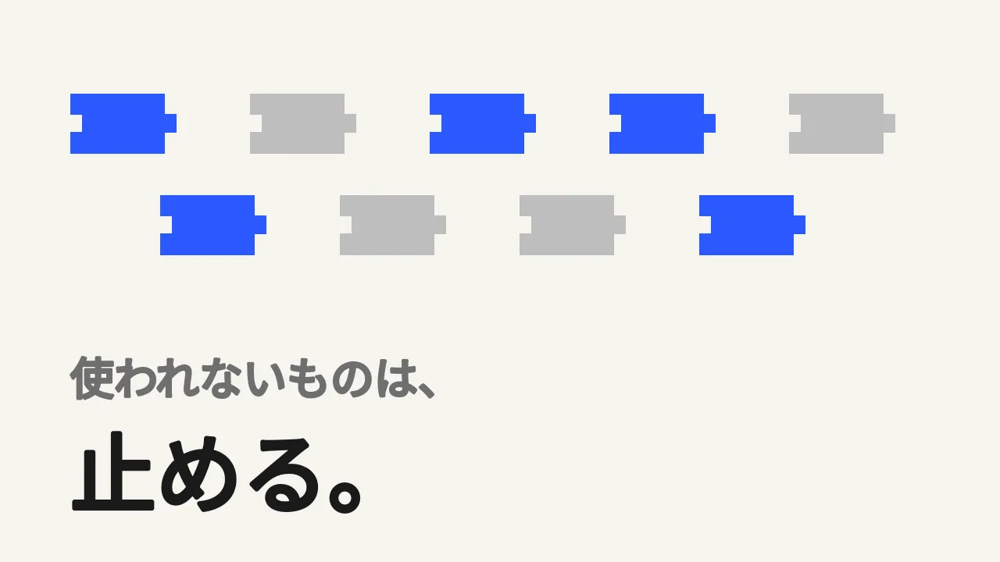
使って、直して。
使われないものは、止める。
便利なら残し、不便なら直す。使われなくなったら止める。そうして、使われるものだけを磨いてきました。
声 44字 ／ 画面 21字
はじめ：上2/3にコマの格子、下に横1行。おわり：格子に灰の穴、下段2行の見出しが大きくなり重心が下へ。
- 0〜4秒：コマの列全体を Crane up（俯瞰へ）。各コマが一度ずつ軽く押される（使われている）。
- 4〜8秒：4つのコマが青から灰へ変わり、奥へ沈む（z 方向に下がる）。
- 8〜12秒：「止める。」を大きく叩き込み、残った青いコマが詰め寄って並び直す。
Crane up
- 図解：電源スイッチが OFF になるアイコン（ホスティング停止の比喩）
- AI生成映像（未承認）：机の上で白い小さなブロックがいくつか静かに沈んで消える 3 秒。生成はしない
一つひとつが、ちゃんと動く
0:29–0:40 / 約11秒 ・ 段2 一つひとつがちゃんと機能する ・ 段2：一つひとつがちゃんと機能する

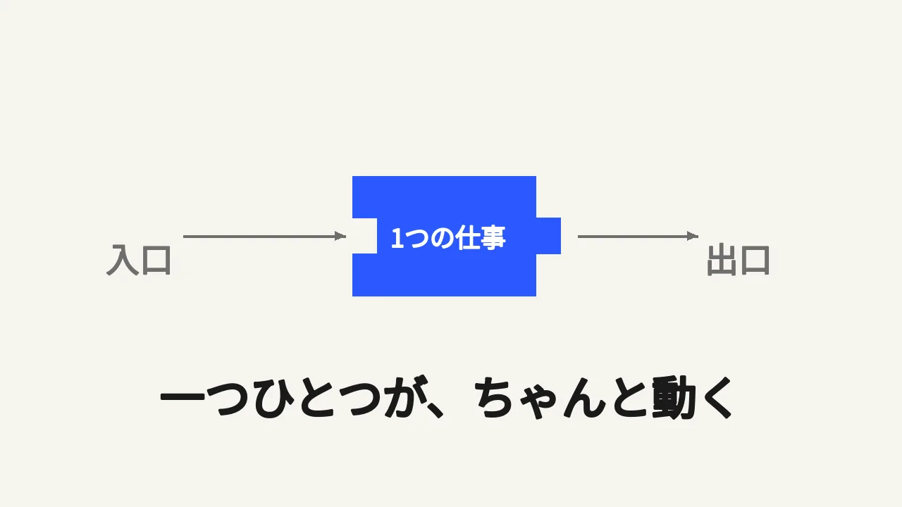

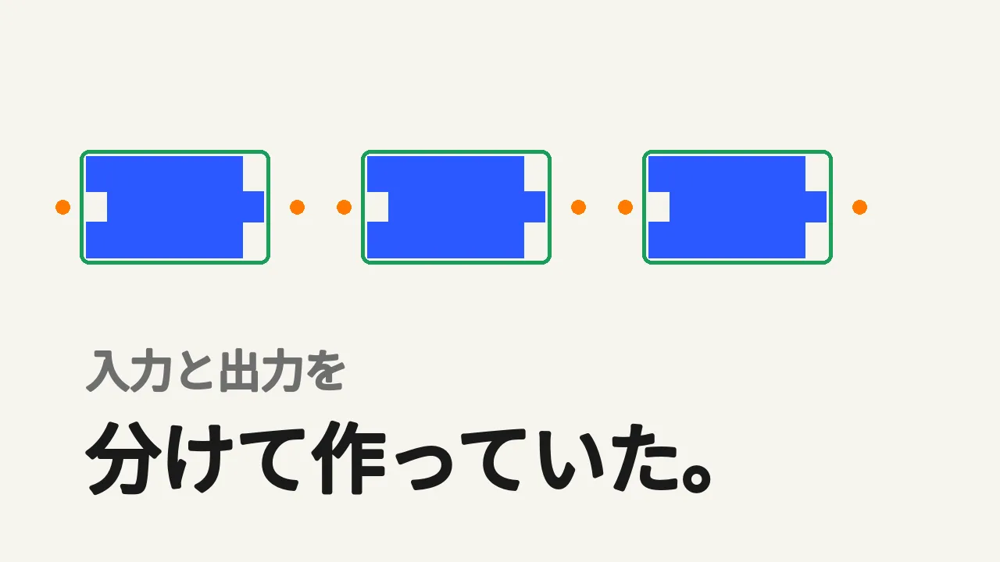
一つひとつが、ちゃんと動く
入力と出力を
分けて作っていた。
小さくても、現場で何度も使われてきた道具です。独立して動くように、インプットとアウトプットも分けていました。
声 50字 ／ 画面 28字
はじめ：中央に1つの大きな図、文字は下中央1行。おわり：上段に3つの図、下段に左寄せ2行。寄りから引きへ。
- 0〜3秒：1つのコマへ Dolly in。入口からオレンジの粒が入り、出口から出る（1回）。
- 3〜6秒：緑の枠が描かれる（線が一周）。「ちゃんと動く」に合わせる。
- 6〜12秒：カメラが Truck left で引きながら横に3つ並ぶ。3つとも、粒が入って出る（ばらばらの拍で）。まだ粒は次のコマへは渡らない。
Dolly in → Truck left
- 図解：入力→箱→出力の3点図（汎用の書類アイコン）
- ピクトグラムアニメ：小さな機械が1枚ずつ紙を受け取り、加工して出す
どれに、何を入れた？
0:40–0:52 / 約12秒 ・ 段2 一つひとつがちゃんと機能する ・ 段2の弱点（量が増えると、分かれていること自体が負荷）

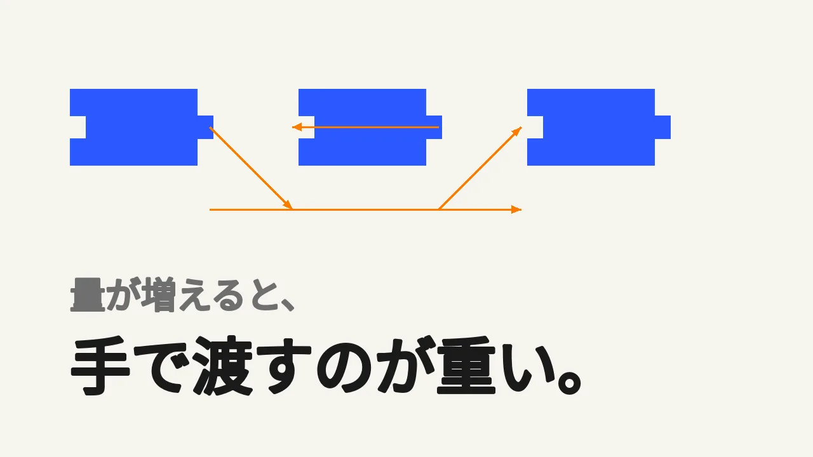

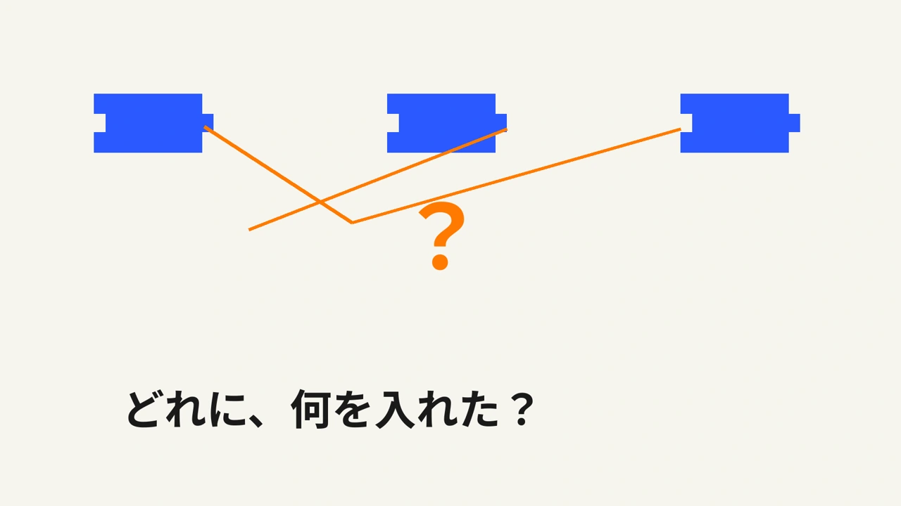
量が増えると、
手で渡すのが重い。
どれに、何を入れた？
ところが量が増えると、分かれていること自体が負荷になりました。結果を手で次へ渡す。どれに何を入れたか、分からなくなる。
声 54字 ／ 画面 26字
はじめ：上にコマ、間に斜めの矢印、下に2行。おわり：中央に記号1つ、下に横1行。斜めの線で画面が乱れる。
- 0〜5秒：手渡しの矢印が1本、2本、4本と増え、カメラが小刻みに Whip pan で左右のコマを行き来する（受け渡しの往復）。
- 5〜9秒：矢印が絡まって止まり、「？」が落ちてくる。
- 9〜13秒：画面全体を少し傾ける（Roll 4°）。
Whip pan（往復）→ Roll
- 実写素材：机の上で紙の書類を手で次の人へ渡す手元（顔なし・ストック）
- ピクトグラムアニメ：人型ピクトが箱から箱へ紙を運び続けて汗をかく
がっちゃんこ？
0:52–1:04 / 約12秒 ・ 脇役の対比（段2→段3の間） ・ 脇役の対比：合体させる案（塊に潰れて割れる）

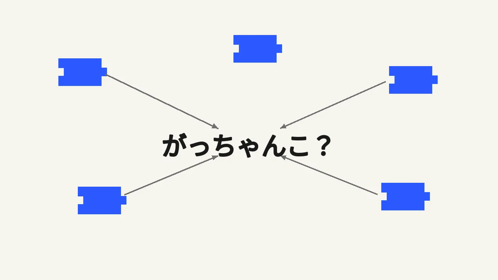

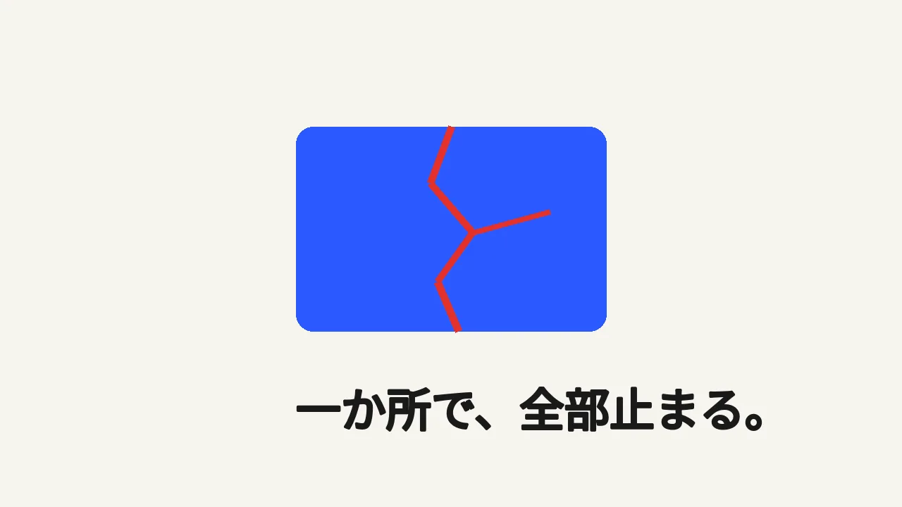
がっちゃんこ？
一か所で、全部止まる。
全部を「がっちゃんこ」した巨大なアプリも考えました。でもそれでは個別に使える良さが消え、どこかが止まれば全体に響きます。
声 55字 ／ 画面 18字
はじめ：四方に散る図、中央に1語。おわり：中央に大きな塊、下に横1行。ここだけ赤が出る。
- 0〜3秒：コマが中央へ吸い寄せられ、1つの塊に潰れる（約0.8秒・速い）。
- 3〜6秒：塊の1か所が赤く欠け、ひびが全体へ走る。
- 6〜9秒：画面ごと巻き戻し（逆再生の速い動き）で、コマがばらばらに戻る。07 へ。
Dolly in（吸い寄せ）→ 逆再生
- 図解：大きな一枚岩にひびが入るアイコン
- ピクトグラムアニメ：積み木を接着剤で固めた塊が1か所欠けて崩れる
流れだけを、つなぐ。
1:04–1:15 / 約11秒 ・ 段3 つなぐと大きく変わる ・ 段3：つなぐ（オーケストレーター）

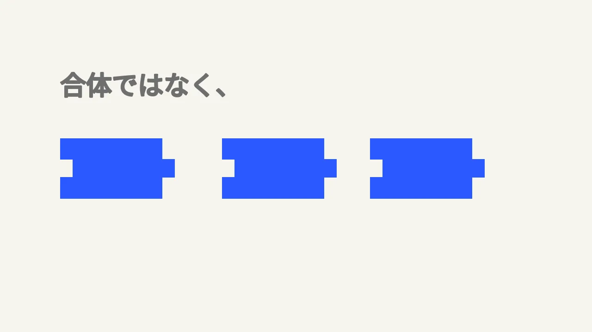

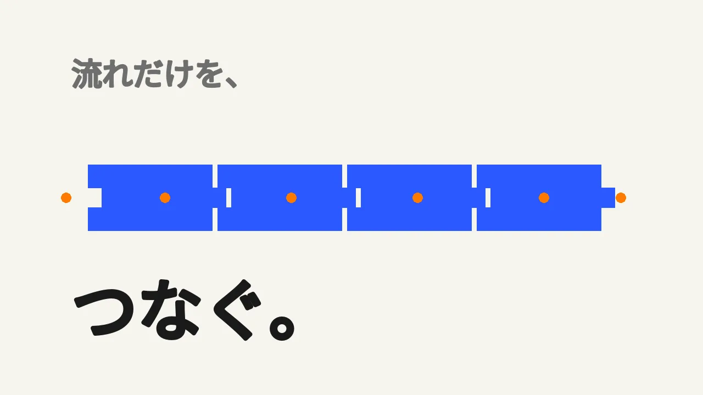
合体ではなく、
流れだけを、
つなぐ。
必要なのは、合体ではありませんでした。各ツールを包んで順番に動かす仕組みを作り、出口と入口だけをつないだのです。
声 52字 ／ 画面 17字
はじめ：中央に横一列、上に1行。おわり：上1行・中央の列・下に特大1語の3層。字の大きさの差が最大。
- 0〜3秒：「合体ではなく、」を行マスクで出し、コマを左右から寄せる。
- 3〜7秒：出口と入口がカチッと噛み合う（1か所0.3秒ずつ、拍に合わせて4回）。噛み合うたびに画面全体が少し押される。
- 7〜12秒：「つなぐ。」を叩き込み、オレンジの粒が左から右へ流れる。カメラは粒を追って Truck right。
固定 → Truck right（粒を追う）
- AI生成映像（未承認）：白い小さなモジュールのブロックが噛み合い、光の粒が通り抜ける Tracking shot 5 秒（ネタ案の英語プロンプトを流用）。生成はしない
- ピクトグラムアニメ：パイプが1本ずつつながり、水が流れる
1つだけ使う日も、そのまま。
1:15–1:26 / 約11秒 ・ 段3 つなぐと大きく変わる ・ 段3：個別利用と連続処理の両立

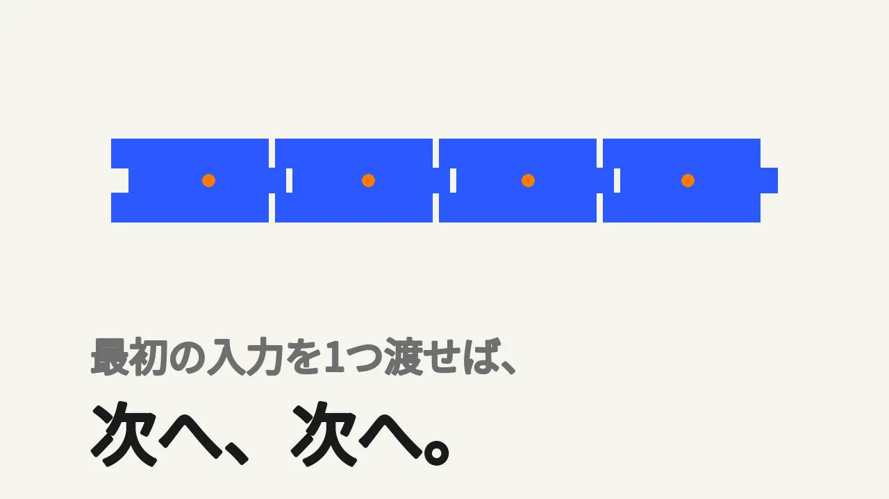

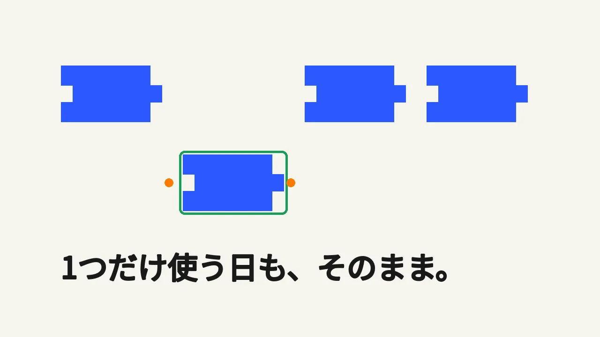
最初の入力を1つ渡せば、
次へ、次へ。
1つだけ使う日も、そのまま。
最初の入力をひとつ渡せば、結果が次へ流れていく。ひとつだけ使いたい日は、これまでどおり個別に使えます。
声 47字 ／ 画面 32字
はじめ：上に列、下に2行の左寄せ。おわり：列に1つ欠けた段差、下に横1行。重心が上下に割れる。
- 0〜4秒：粒が次々に流れる。「次へ、次へ。」の語が粒と同じ向きに押し出される。
- 4〜8秒：2つ目のコマが下へ抜け出し（Crane down で追う）、単独で粒を受けて出す。
- 8〜12秒：カメラが上へ戻り、列と単独のコマを1画面に収める。
Truck → Crane down → Crane up
- 図解：同じ道具を「単体モード」と「連続モード」で並べた2画面
- ピクトグラムアニメ：電車の車両が1両だけ切り離されても走る
点が、線になった。
1:26–1:39 / 約13秒 ・ 段3 つなぐと大きく変わる ・ 段3：大きく変わる（見せ場）

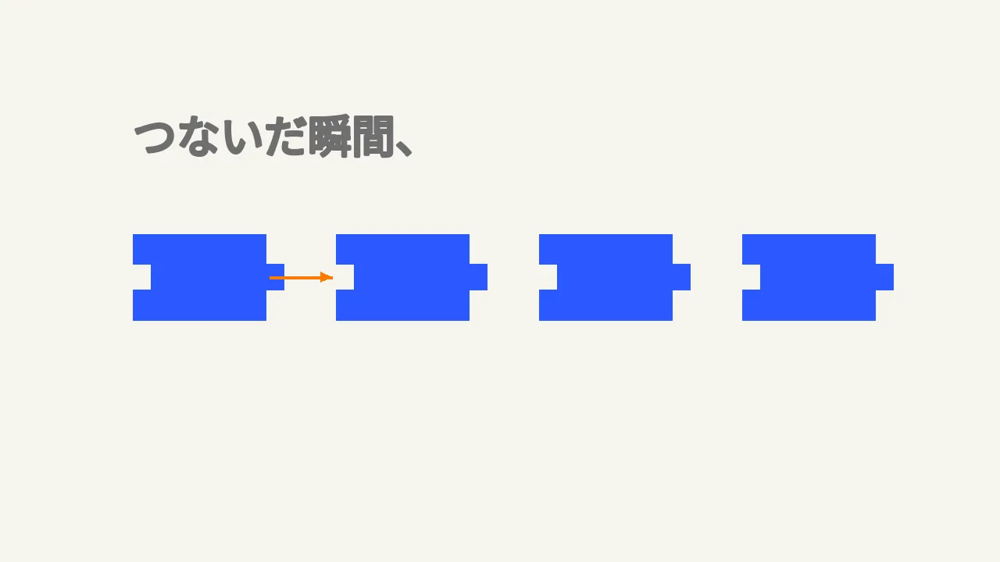

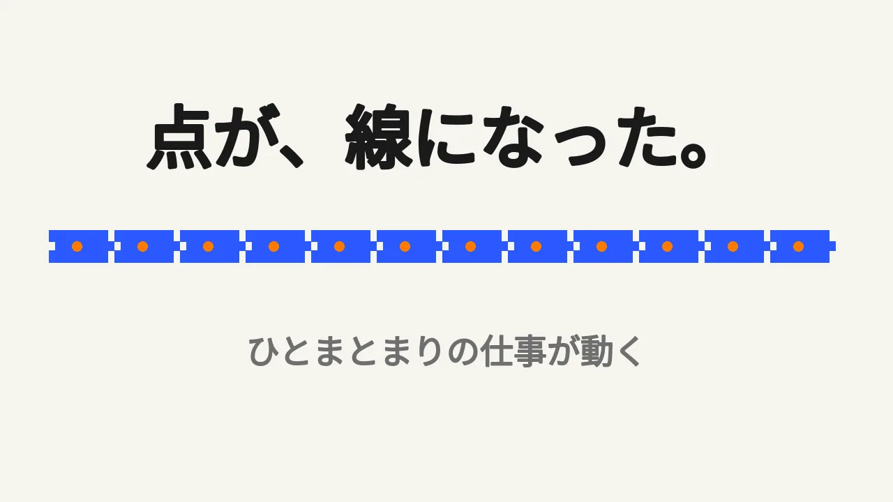
つないだ瞬間、
点が、線になった。
ひとまとまりの仕事が動く
ひとつずつは小さな道具でも、つなぐと、できることがぐっと増える。点が線になり、ひとまとまりの仕事が動き出しました。
声 52字 ／ 画面 28字
はじめ：大きな図4つ、文字は左上の小さな1行。おわり：細い横線と中央寄せの見出し。寄りから引きへ、密から疎へ。
- 0〜3秒：オレンジの粒が4つのコマを抜けるのを追う。
- 3〜8秒：Zoom out（約3秒・ゆっくり）。画面の外にもコマが続いていて、1本の線になる。
- 8〜13秒：「点が、線になった。」を中央上に大きく。線全体を光の粒が一気に流れ、最後は Freeze frame 1 秒。
Zoom out（大きく）→ Freeze
- 実写素材：夜の線路や道路を光の筋が流れるタイムラプス（ストック、場所が特定されないもの）
- 図解：点の並びが線でつながる地図風の図
本当に化けたのは、経験かもしれない
1:39–1:52 / 約13秒 ・ 導入・留保・結論 ・ 留保（一発では作れない／化けたのは経験）

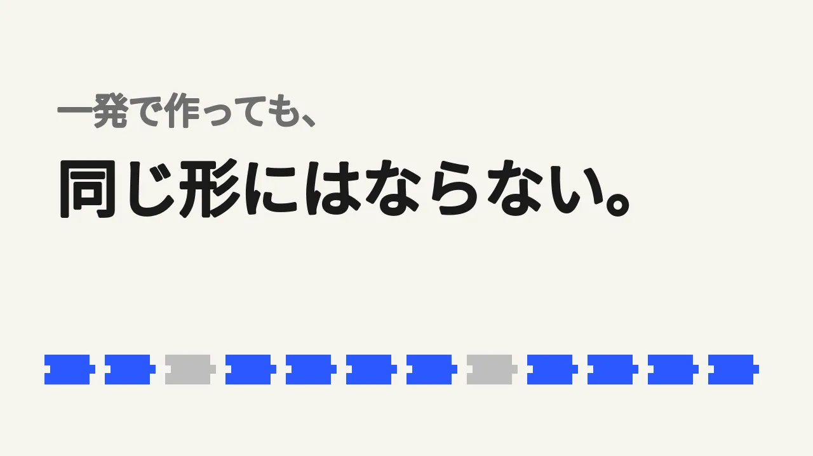

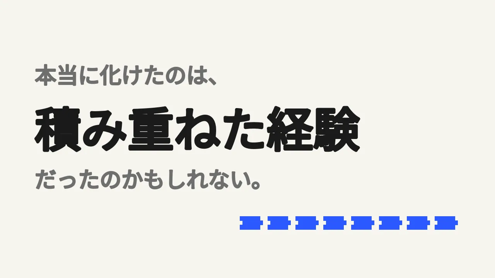
一発で作っても、
同じ形にはならない。
本当に化けたのは、
積み重ねた経験
だったのかもしれない。
同じものを一発で作ろうとしても、きっと同じ形にはなりません。本当に化けたのは、アプリではなく、積み重ねてきた経験だったのかもしれません。
声 63字 ／ 画面 45字
はじめ：上に2行、下端に列。おわり：左寄せの3段、強弱つき。下端に小さな列。
- 0〜5秒：カメラが Crane down で、線の下に積もった過去のコマ（灰も含む）を見せる。
- 5〜9秒：「積み重ねた経験」を大きく、行マスクで下から入れる。
- 9〜14秒：小さなコマが1つずつ積み上がる。文字の塊は上へゆっくり流す。
Crane down
- 実写素材：ノートに手書きでメモを重ねていく手元（顔なし・ストック）
- ピクトグラムアニメ：階段を1段ずつ作りながら登る人型
小さいまま、終わらない。
1:52–2:06 / 約14秒 ・ 導入・留保・結論 ・ 本人の結論（肯定で閉じる）

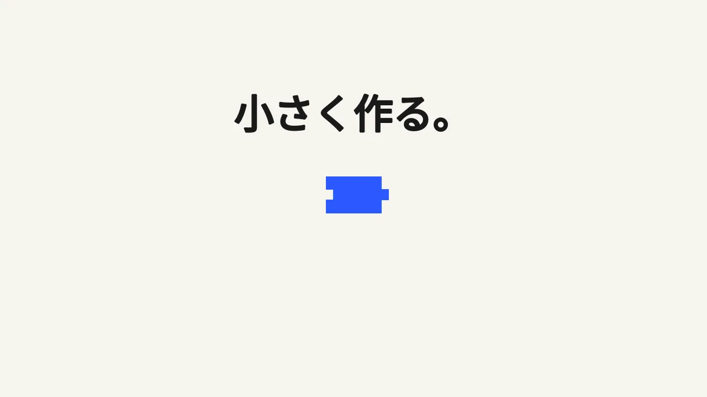

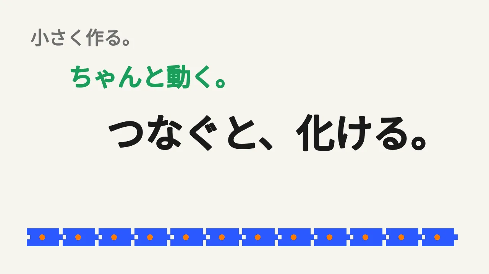
小さく作る。
ちゃんと動く。
つなぐと、化ける。
小さく作っても、一つひとつがちゃんと動いていれば、つないだとき、大きく何かを変えられる。作っていたミニアプリたちは、つないだ瞬間に、化けました。
声 65字 ／ 画面 22字
はじめ：中央の点＋上1行（02 はじめと呼応）。おわり：3行が左上から右下へ階段状に大きくなる（3段の要約）、下端に線。
- 0〜3秒：1つのコマに寄った状態から始まる（02 のはじめと同じ構図で呼応）。
- 3〜8秒：コマの左右に次々とコマが噛み合い、カメラが引いて線になる。
- 8〜12秒：「つなぐと、化ける。」を最大の字で叩き込み、画面全体を右へ押し出してロゴ画面のライムへ Whip pan。
Zoom out → Whip pan（ロゴへ）
- 図解：1つの点から線が伸びるだけの最小図
- AI生成映像（未承認）：机の上の白い小さなブロックが1つずつ連なっていく俯瞰 4 秒。生成はしない
エンドロゴ
2:06–2:11 / 約5秒 ・ エンドロゴ ・ 制作表示

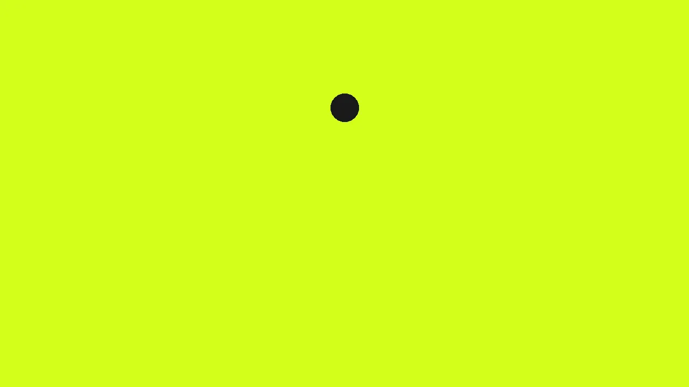

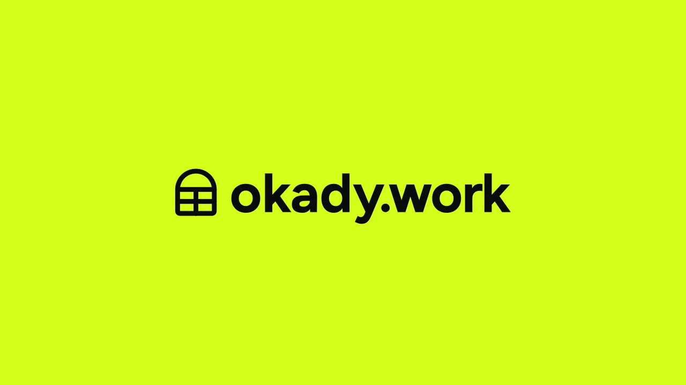
（ロゴのみ）
（なし）
声 0字 ／ 画面 4字
ロゴ以外の文字・要素は置かない。
- SVG 内の CSS アニメーション（0〜2.6秒 o の落下とバウンド、2.6〜3.2秒 左へスライド、3.0〜4.0秒「.work」出現）をフレーム時刻から再現。
- 完成状態を約1〜1.5秒保持して終わる。
固定
- （差し替えなし）
キャラ・形の設定と記号・色の一覧
主役の形「コマ」：左に凹（入口）、右に凸（出口）のついた青い四角。1 つ＝1 つのミニアプリ。顔や手足は付けない。大きさは場面で変えてよいが、凹凸の向き（左が入口・右が出口）は全編で固定。コマの数は絵の都合で、実際のアプリ数ではない。
| 記号・色 | 意味（1 記号 1 意味） | 出るカット |
|---|---|---|
| 青 #2b59ff のコマ | ミニアプリ（使われているもの） | 01–11 |
| 灰 #bebebe のコマ | 止めたミニアプリ | 03・10 |
| 緑 #1a9e5a の枠・字 | ちゃんと機能している（段2） | 04・08・11（「ちゃんと動く。」） |
| オレンジ #ff7a00 の粒・矢印 | 仕事（入力・出力）の流れ。05 では手で渡す流れ、07 以降は自動で流れる流れ。どちらも「流れ」 | 04・05・07・08・09・11 |
| オレンジの「？」 | 流れを見失った（どれに何を入れたか）。流れの色の派生として 05 だけ | 05 |
| 赤 #e5322d のひび | 合体させた塊が壊れる（06 のみ） | 06 |
| 大きな青い塊 | 全部を合体させた巨大アプリ（脇役） | 06 |
| 灰の矢印 | 合体へ向かう動き（流れではない） | 06 |
| 墨 #1a1a1a の字／灰 #6e6e6e の字 | 主役の語／前置き・補足 | 全編 |
| 紙色 #f7f5ef の背景 | 本編の地。暗い全面背景は使わない | 01–11 |
| ライム #d2ff1a | エンドロゴの背景だけ（本編では使わない） | 12 |
点検：オレンジは「流れ」以外に使っていない（以前の案で「動いている印」の枠をオレンジにしていたが、緑へ分けた）。赤は 06 のひびだけ。緑は「ちゃんと機能する」だけ。
references.md との対応
| 役割 | 内容 | references.md | 画面文言（カット） |
|---|---|---|---|
| 主張 | 小さく作っても、一つひとつがちゃんと機能していれば、つないだとき大きく変えられる | ユーザー原文・A11・A13 | 小さく作る。ちゃんと動く。つなぐと、化ける。（11） |
| 根拠 段1 | 1アプリ1仕事、使われないものは止める | A2・A3 | 02・03 |
| 根拠 段2 | 現場で使われてきた道具、入力と出力を分けていた | A4・A5 | 04 |
| 段2の弱点 | 量が増えると分かれていること自体が負荷 | A6 | 05 |
| 対比（脇役） | 合体すると個別利用の良さが消え、不具合が全体へ | A7 | 06 |
| 根拠 段3 | 流れだけをつなぐ／個別利用も残る／点が線に | A8–A11 | 07・08・09 |
| 留保 | 一発では同じ形にならない／化けたのは経験かもしれない | A12・A14 | 10 |
| 結論 | つないだ瞬間に化けた | A13 | 11 |
企画側と制作側の担当範囲
| 企画側（この企画書） | 制作側 |
|---|---|
| 主張・構成・尺の目安・画面の文言・ナレーション案・絵コンテ・記号と色・差し替え素材の候補と採否の判断・新規の画像／動画素材の用意（採用が決まったら）・AI 生成映像の承認取り | three.js（推奨）または同等の手段での実装、文字層（DOM／CSS）と図の層の分離、フレーム時刻から決まる動き、文字のはみ出し・重なりの機械検査（各文字の外接矩形を全カットで一定間隔ごとに取り、安全域外と、文字×図形・矢印の交差を書き出す。AGENTS.md の手順）、代表区間の等速確認、エンドロゴのアニメーション再現、BGM・効果音（後工程） |
絵コンテの文字は、企画側でも PIL の外接矩形で安全域（左右 40px・上下 30px）外と文字同士の重なりを検査し、該当なしを確認済み。これは制作側の機械検査の代わりではない。
状態
- 等速通し：未確認（映像はまだない）
- BGM・効果音：後回し（今回は検討もしない）
- NANKA DEKIRU：候補確認済み（説明文ベース、デモの動きは未確認）→ effects-direction.md
- AI 生成映像：候補に挙げただけで未承認・未生成
- レンダリング・書き出し・投稿：していない
未確定事項と、判断してほしい点
- 尺：約 2:11（既定）で行くか、06 を外して約 1:59 の 2 分以内にするか。
- ナレーションの有無：声ありの前提で組んでいる。声なしなら画面の文字を増やして組み直し、尺も変わる。
- 06 の「一か所で、全部止まる。」：原稿は「影響が広がり」。強めの言い換えなので「一か所が、全体に響く。」へ弱めるか。
- 02 のコマの仮ラベル（集計・整形・確認・変換・通知）：汎用語のまま残すか、ラベルなしにするか（実在のアプリ名は出さない）。
- 11 のナレーション：「一つひとつがちゃんと動いていれば、つないだとき、大きく何かを変えられる」は原稿ではなく 2026-11-05 のご本人の言葉に基づく。この言い方でよいか。
- 差し替え素材：実写ストック（01・05・09・10）を使うか、全編を図形とピクトで通すか。
- AI 生成映像（03・07・11 の候補）：使う場合はクレジット消費の承認が要る（未承認）。